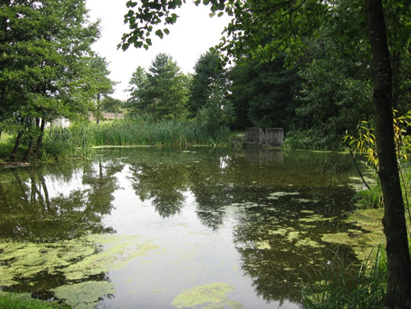
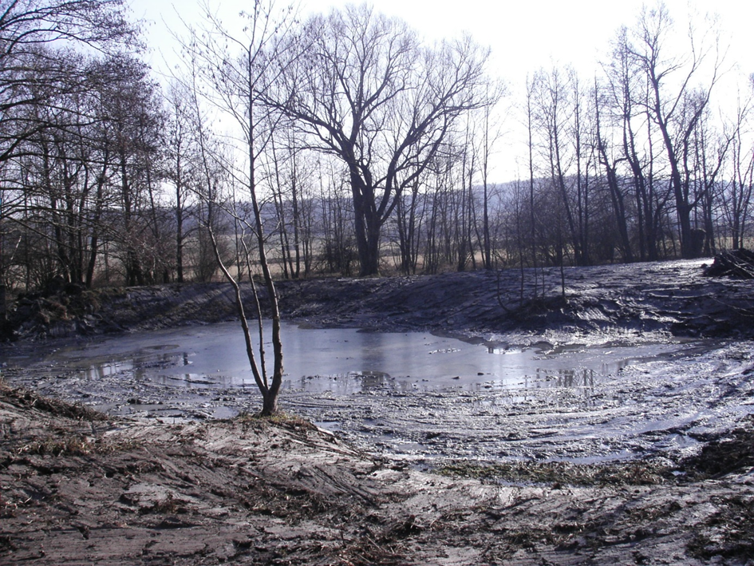
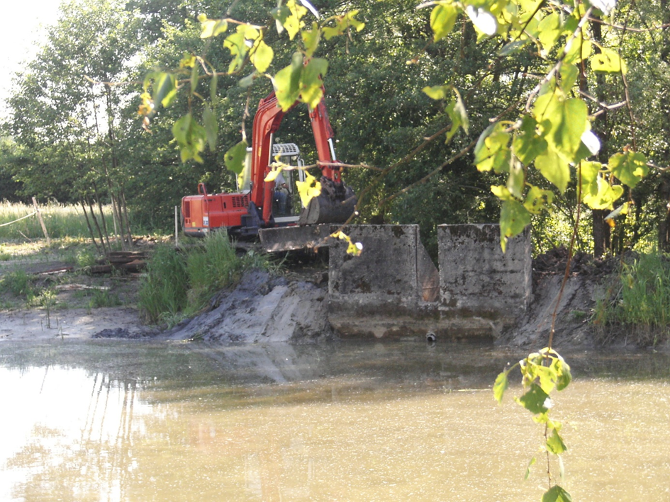
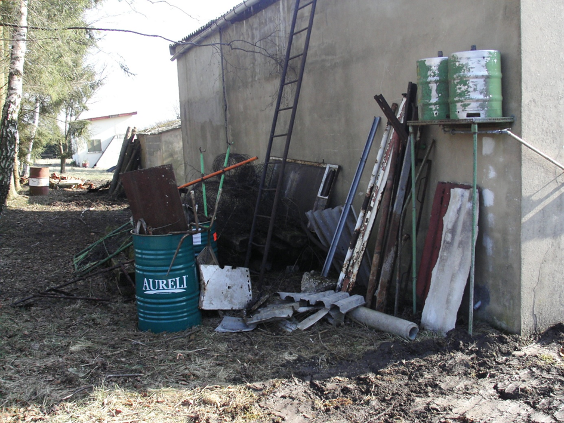
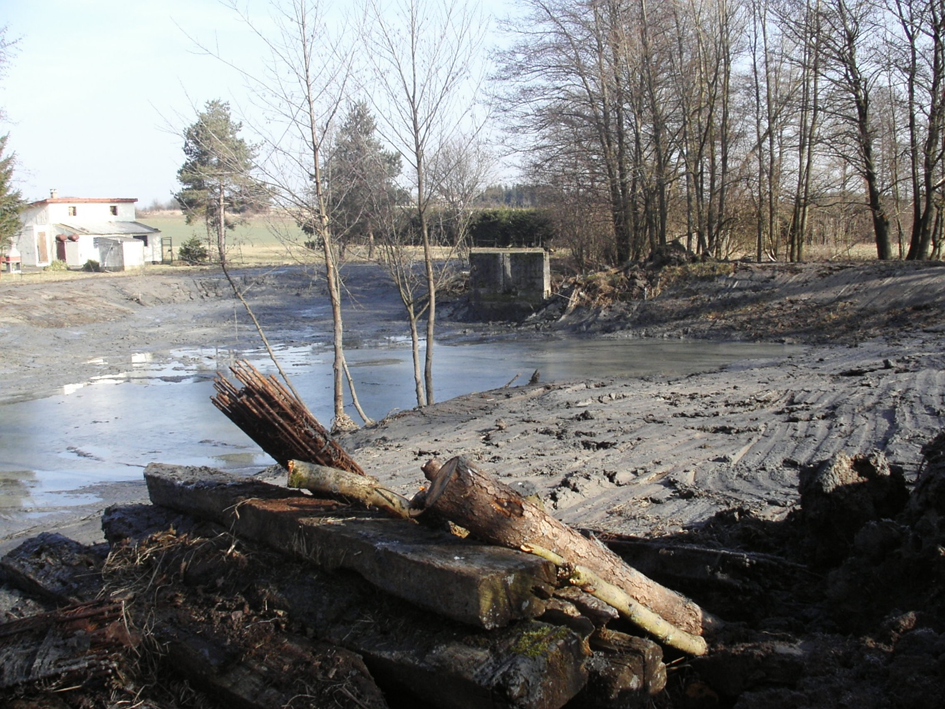
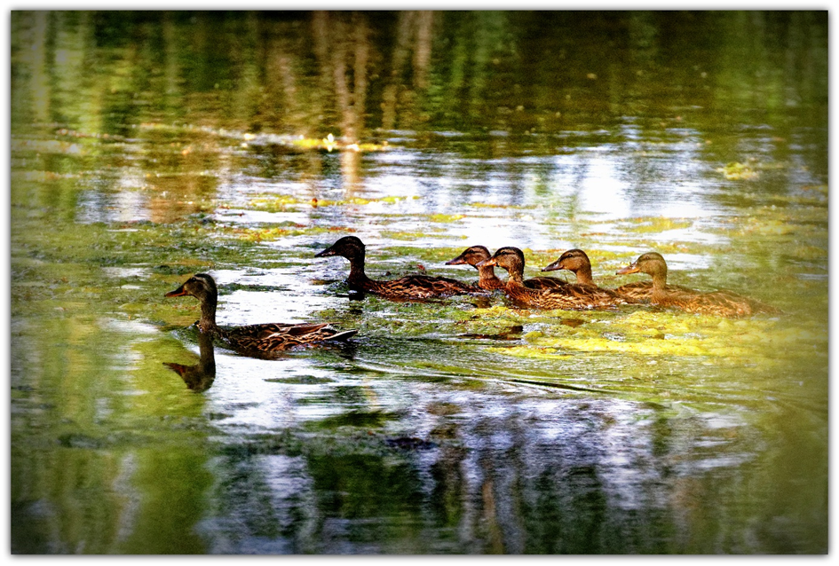
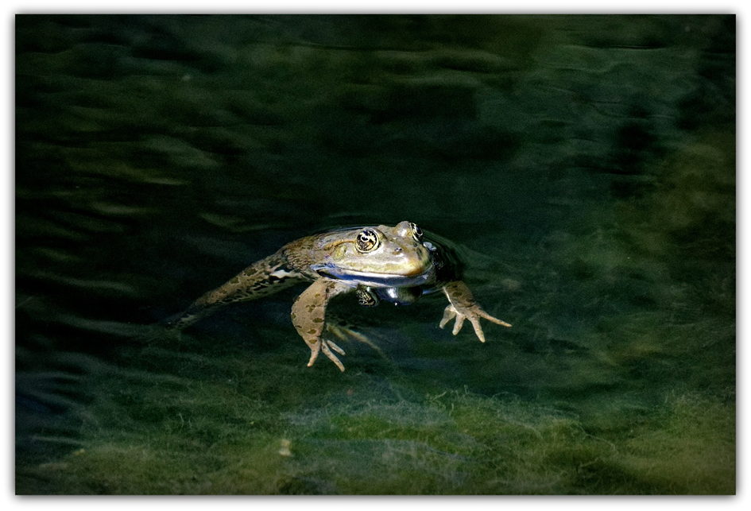
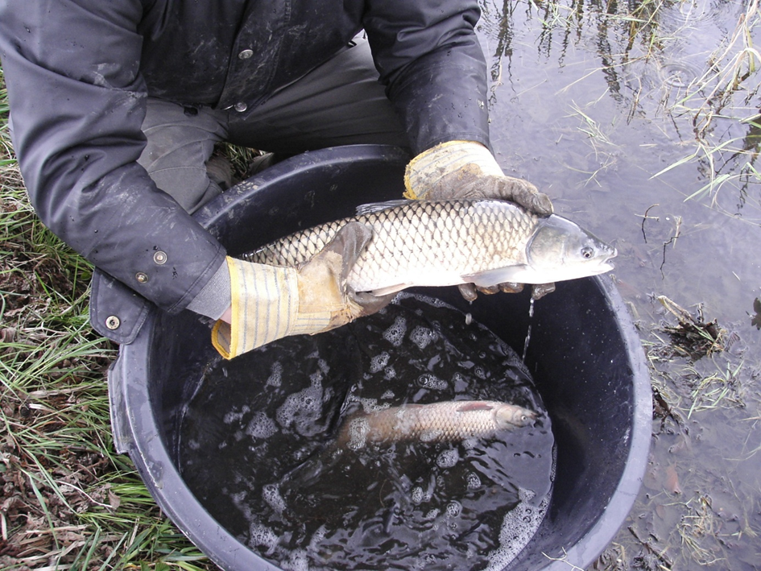
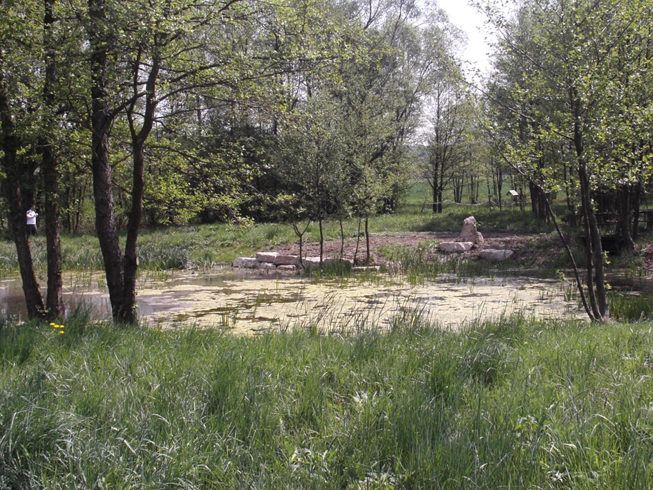
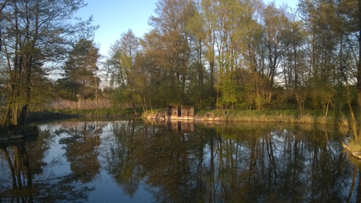

L'acquisition de l'étang d'Hoste en 2004 a effectivement marqué un tournant décisif pour sa réhabilitation. À cette époque, l'étang était dans un état préoccupant. La digue endommagée compromettait la gestion de l'eau, et les berges, envahies par des plantes invasives, rendaient l'accès difficile tout en nuisant à la biodiversité locale. L'eau trouble, résultat d'un manque d'entretien prolongé, témoignait de l'accumulation de sédiments et de la dégradation de l'écosystème.
La restauration de cet étang a donc constitué une belle opportunité pour redonner vie à cet espace naturel. En s'attaquant aux problèmes structurels, en nettoyant les berges et en contrôlant les plantes invasives, l'entreprise a non seulement amélioré la qualité de l'eau, mais a également favorisé le retour de la faune et de la flore locales. Ce projet de réhabilitation a également inspiré d'autres initiatives similaires, soulignant ainsi l'importance cruciale de prendre soin de nos écosystèmes aquatiques. C'est un bel exemple de ce que l'engagement en faveur de la nature peut accomplir !

La réhabilitation de l'étang d'Hoste , voici un aperçu des étapes :
En redessinant les contours de l’étang de manière réfléchie, on peut non seulement améliorer son esthétique, mais aussi renforcer sa fonctionnalité écologique et sa valeur pour la biodiversité.
Curage de l’étang : cette opération a permis d'éliminer les sédiments accumulés et d'améliorer la qualité de l'eau, favorisant ainsi le développement d'un écosystème aquatique sain.

Remise en état de la digue : celle-ci est cruciale pour assurer une gestion efficace de l'eau et prévenir les risques d'inondation, tout en préservant l'intégrité de l'étang.

Dépollution des abords : En nettoyant les abords de l'étang, on a éliminé les polluants et les déchets qui pouvaient nuire à la faune et à la flore locales.

L'aménagement des berges en pente douce est une initiative très bénéfique pour l'étang. En stabilisant et en végétalisant ces berges, on a non seulement préservé la structure de l'étang, mais on a également créé des habitats propices à diverses espèces.

Un étang avec des roseaux et des nénuphars est un véritable havre de paix et de biodiversité. Ils servent de refuge pour de nombreuses espèces d'oiseaux, d'insectes et d'autres animaux. De plus, les roseaux aident à stabiliser les berges et à filtrer les polluants, contribuant ainsi à la qualité de l'eau. Les Nénuphars avec leurs grandes feuilles en forme de cœur et leurs fleurs délicates offrent non seulement un habitat pour les insectes et les petits poissons, mais elles fournissent également de l'ombre et réduisent l'évaporation de l'eau.


Réfection d’un abri de pêche : Cela a permis de créer un espace convivial pour les nouveaux propriétaires tout en respectant l'écosystème, favorisant ainsi une utilisation durable de l'étang.
La réintroduction de poissons peut non seulement enrichir la biodiversité de l'étang, mais aussi offrir des opportunités de loisirs, comme la pêche, tout en renforçant l'engagement de la communauté envers la conservation des milieux naturels. C'est une belle initiative qui contribue à la santé de l'écosystème aquatique

La restauration de cet étang a donc constitué une belle opportunité pour redonner vie à cet espace naturel. En s'attaquant aux problèmes structurels, en nettoyant les berges et en contrôlant les plantes invasives, l'entreprise a non seulement amélioré la qualité de l'eau, mais a également favorisé le retour de la faune et de la flore locales. Ce projet de réhabilitation a également inspiré d'autres initiatives similaires, soulignant ainsi l'importance cruciale de prendre soin de nos écosystèmes aquatiques.
Ces mesures, mises en œuvre de manière cohérente, ont contribué à redonner vie à l'étang d'Hoste et à en faire un lieu de détente et de biodiversité. C'est un projet qui a montré l'importance de la restauration des milieux naturels.
C'est un bel exemple de ce que l'engagement en faveur de la nature peut accomplir !

